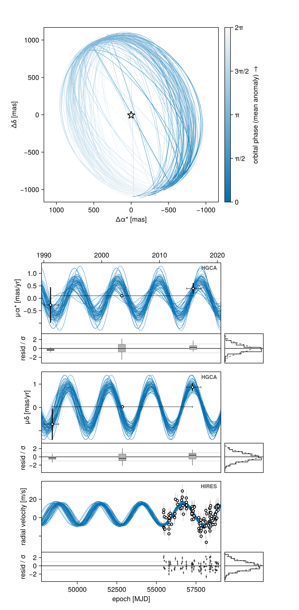
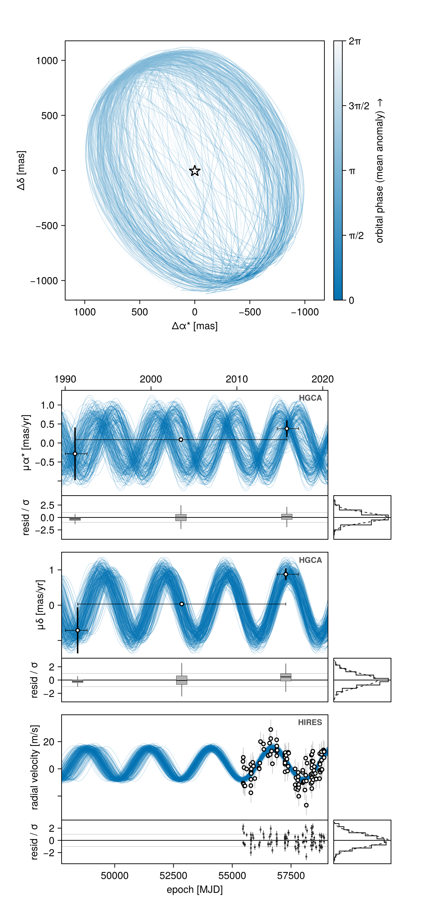
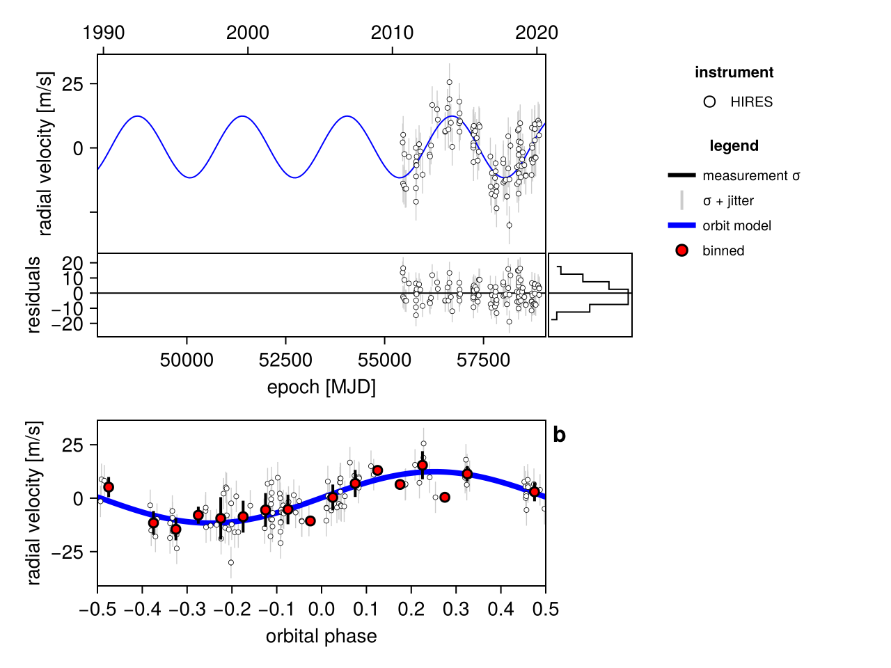
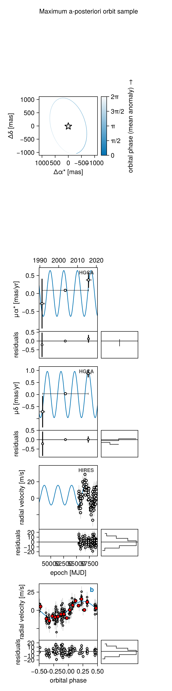
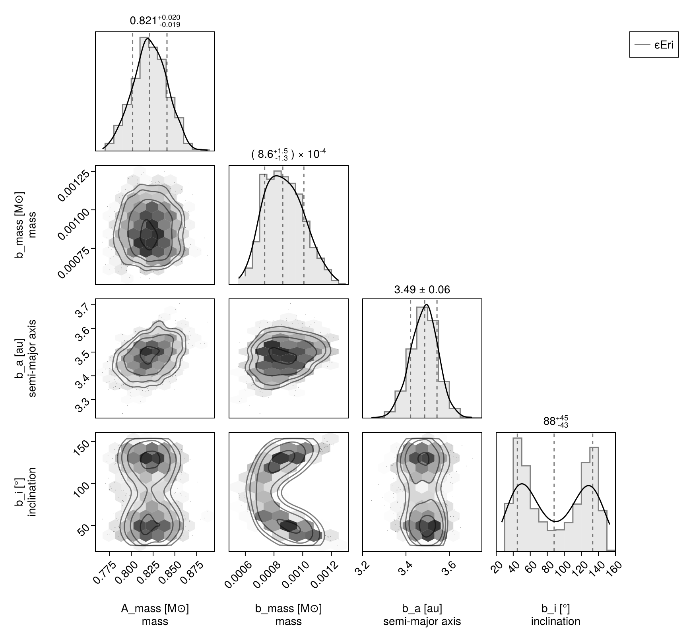

Fit RV and Proper Motion Anomaly
In this example, we will fit an orbit model to a combination of radial velocity and Hipparcos-GAIA proper motion anomaly for the star $\epsilon$ Eridani. We will use some of the radial velocity data collated in Mawet et al 2019.
The public RV archive loaders and the marginalized RV likelihood are supplied by the extension package OctofitterRadialVelocity. To install it, run pkg> add OctofitterRadialVelocity
The HGCA family is no longer a set of observation types. HGCAObs is a thin constructor that builds a G23HObs restricted to the six channels the HGCA constrains (Hipparcos, Hipparcos–Gaia, and Gaia DR3 proper motions), with ueva_mode=:none and no RV channel. Everything G23HObs documents applies — in particular the source membership keywords host= and companions=, which say which bodies this catalog source is made of.
Datasets from radial velocity instruments are modelled together with separate jitters and instrumental offsets.
using Octofitter, OctofitterRadialVelocity, Distributions, PlanetOrbits, CairoMakie
using Pigeons
gaia_id = 51647079702618905605164707970261890560We build the bodies first, since the observations name them. The host is an ordinary body, with a mass and — because Gaia and Hipparcos see a photocentre — a flux in each of their bands. Setting the host's flux to 1 makes every other body's flux a contrast ratio; a dark companion gets 0.
A = Body(
name="A",
variables=@variables begin
mass ~ truncated(Normal(0.82, 0.02), lower=0.5, upper=1.5) # M⊙ (Baines & Armstrong 2011)
flux_G = 1.0 # Gaia G
flux_Hp = 1.0 # Hipparcos Hp
end
)
b = Body(
name="b",
about=A,
# No relative astrometry is included since the planet has not yet been
# directly detected.
variables=@variables begin
# For speed of example, we are fitting a circular orbit only.
e = 0
ω = 0.0
# Masses are solar masses; `mjup` is a plain multiplicative constant.
mass ~ Uniform(0, 3mjup) # M⊙
a ~ Uniform(3, 10) # AU
i ~ Sine()
Ω ~ Uniform(0, 2pi)
# Phase: the mean anomaly at a reference epoch.
M0 ~ Uniform(0, 2pi)
epoch = 58849.0
flux_G = 0.0 # dark to Gaia and Hipparcos
flux_Hp = 0.0
end
)We load in data from one RV instrument. We use MarginalizedRVObs instead of RadialVelocityObs to analytically marginalize out the radial velocity zero point of each instrument, saving one parameter.
hires_data = OctofitterRadialVelocity.HIRES_rvs("HD22049")
rvlike_hires = MarginalizedRVObs(
hires_data;
target=A, ref=Barycentre, # the star's reflex motion against the barycentre
name="HIRES",
variables=@variables begin
jitter ~ LogUniform(0.1, 100) # m/s
end
)Octofitter never invents a prior. With MarginalizedRVObs the offset is integrated out analytically (and declaring one is an error), but the jitter line above is required — without it the model fits with no white-noise term at all.
We load the HGCA data for this target. host= and companions= declare which bodies this source is made of, and ref=Barycentre says the astrometry is referred to the system barycentre:
pma = HGCAObs(; gaia_id, host=A, companions=(b,), ref=Barycentre, freeze_epochs=true,
)┌ Info: Count of missed or rejected transits:
└ dr3 = 1
┌ Warning: Gaia DR2 matched-transit count exceeds the geometric DR2-window pool; the excess must be doubly-downlinked transits and is modelled as repeated epochs.
│ n_pool = 22
│ n_dr2_total = 28
└ @ Octofitter ~/octo-maintenance/runner/actions-runner/_work/Octofitter.jl/Octofitter.jl/src/likelihoods/g23h.jl:834
┌ Info: DR2/DR3 epoch selection
│ n2_win = 21
│ n_tail = 9
│ n_dr2_total = 28
└ n_dr2_distinct_range = (14, 22)freeze_epochs=true fixes which of Gaia's forecast scans were actually used, instead of marginalizing over that selection. It is the fast-but-approximate setting (the same one the G23H tutorial recommends for exploration). Without it, the model gains one free parameter per forecast scan — 31 for this target, most of them a nearly-flat nuisance dimension that HMC struggles with. Drop it for production fits, and reach for a tempered sampler when you do.
The catalog row it fetched is available as pma.catalog, which is convenient for centring the frame priors below:
cat = pma.catalog
(cat.parallax, cat.pmra_dr3, cat.pmdec_dr3)(310.5772928005821, -974.758145249517, 20.875840089774208)Now the system. Absolute astrometry needs a full absolute frame: plx, ra, dec, pmra, pmdec, rv and ref_epoch must all be declared together in the system block (a partial frame is rejected at model-build time). pmra/pmdec are the reference point's proper motion, which is what G23HObs compares its catalog proper motions against.
sys = System(
name="ϵEri",
bodies=[A, b],
observations=[pma, rvlike_hires],
variables=@variables begin
plx ~ gaia_plx(; gaia_id)
ra = $(cat.ra)
dec = $(cat.dec)
pmra ~ Normal(cat.pmra_dr3, 10)
pmdec ~ Normal(cat.pmdec_dr3, 10)
rv = 0.0 # systemic radial velocity [km/s]
ref_epoch = 57388.5 # Gaia DR3 reference epoch, J2016.0 (MJD)
end
)
# Build model
model = Octofitter.LogDensityModel(sys)LogDensityModel for System ϵEri of dimension 10 and 123 epochs with fields .ℓπcallback and .∇ℓπcallback
The catalog proper motions already contain the companion's signal, so pinning the frame's proper motion tightly to a catalog value double-counts it. Give pmra and pmdec room to move, as above — and note that they are frame variables: they must be declared together with the rest of the absolute frame, and they cannot be declared alone.
ra = $(cat.ra) uses $ interpolation, which splices a value computed outside the model into a derived (=) variable. Prior (~) lines are evaluated in your own scope already, so they take plain expressions: pmra ~ Normal(cat.pmra_dr3, 10) — no $ (and $ on a ~ line is a syntax error).
Find good starting points and visualize the starting position + data:
init_chain = initialize!(model)
octoplot(model, init_chain)
Now sample. You could use HMC via octofit or tempered sampling via octofit_pigeons. Absolute astrometry fits are frequently multi-modal, so the tempered sampler is usually the safer choice, and it is what this page uses. When using tempered sampling, make sure to start julia with julia --threads=auto. Each additional round doubles the number of posterior samples, so n_rounds=10 gives 1024 samples. You should adjust n_chains to be roughly double the Λ value printed out during sampling, and n_chains_variational to be roughly double the Λ_var column.
results, pt = octofit_pigeons(model, n_rounds=10, n_chains=10, n_chains_variational=0, explorer=SliceSampler());[ Info: Sampler running with multiple threads : true
[ Info: Likelihood evaluated with multiple threads: false
[ Info: [ϵEri] observing_geometry = true (user)
[ Info: [ϵEri] barycentric_lighttime = true (user)
─────────────────────────────────────────────────────────────────────────────────────────────────────────────
scans restarts Λ time(s) allc(B) log(Z₁/Z₀) min(α) mean(α) min(αₑ) mean(αₑ)
────────── ────────── ────────── ────────── ────────── ────────── ────────── ────────── ────────── ──────────
2 0 3.58 0.435 4.06e+08 -6.76e+03 0 0.603 1 1
4 0 4.14 0.568 7.59e+08 -3.08e+03 0 0.54 1 1
8 0 4.81 0.808 1.43e+09 -824 0 0.466 1 1
16 0 5.46 1.37 2.78e+09 -459 2.66e-45 0.394 1 1
32 0 5.92 2.75 5.39e+09 -436 1.06e-24 0.342 0.995 0.999
64 3 3.2 6.18 1.16e+10 -417 0.318 0.644 1 1
128 9 3.08 12.6 2.37e+10 -415 0.543 0.658 1 1
256 21 2.89 27 4.73e+10 -415 0.55 0.679 1 1
512 52 2.82 55.2 9.52e+10 -415 0.609 0.687 1 1
1.02e+03 83 2.95 103 1.89e+11 -415 0.605 0.672 1 1
─────────────────────────────────────────────────────────────────────────────────────────────────────────────HMC is much cheaper per sample and will run this model fine once you know the posterior is unimodal. Seed it deliberately with initialize! as above, and run several chains from different starting points: a single chain can only jump 2–3σ gaps between modes, so agreement between independent chains is the check that you have not silently landed in one of several solutions.
We can now plot the results with a multi-panel plot. octoplot derives its panels from the model, so the sky orbit, the RV time series and its phase-folded panel all appear without being asked for:
octoplot(model, results)
rvplot is the complementary view. Where octoplot draws many samples from the posterior — one RV curve per draw, each carrying its own instrument offsets, with the measurements left exactly as reported — rvplot renders a single draw, which is what lets it put every instrument back on one axis:
rvplot(model, results)
We can see what the orbit looks like for the maximum a-posteriori sample (note, we would need to run an optimizer to get the true MAP value; this is just the MCMC sample with highest posterior density). Slicing the chain is how you plot a single draw:
i_max = argmax(vec(results[:logpost]))
res = octoplot(model, results[i_max:i_max, :, :])
Label(res.figure[0, 1], "Maximum a-posteriori orbit sample")
Makie.resize_to_layout!(res.figure)
res.figure
And a corner plot:
using PairPlots
octocorner(model, results, small=true)